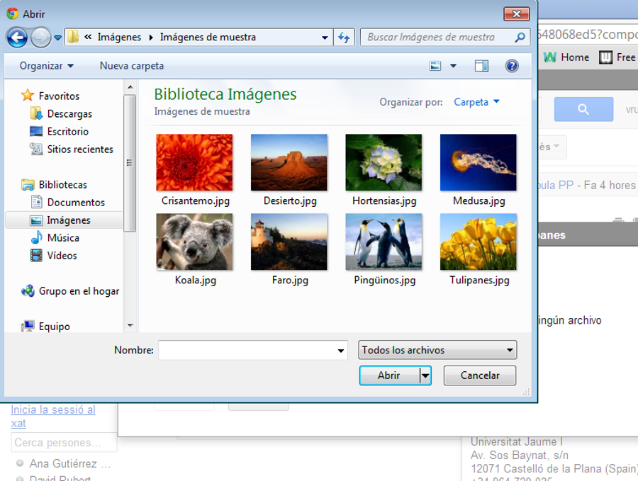
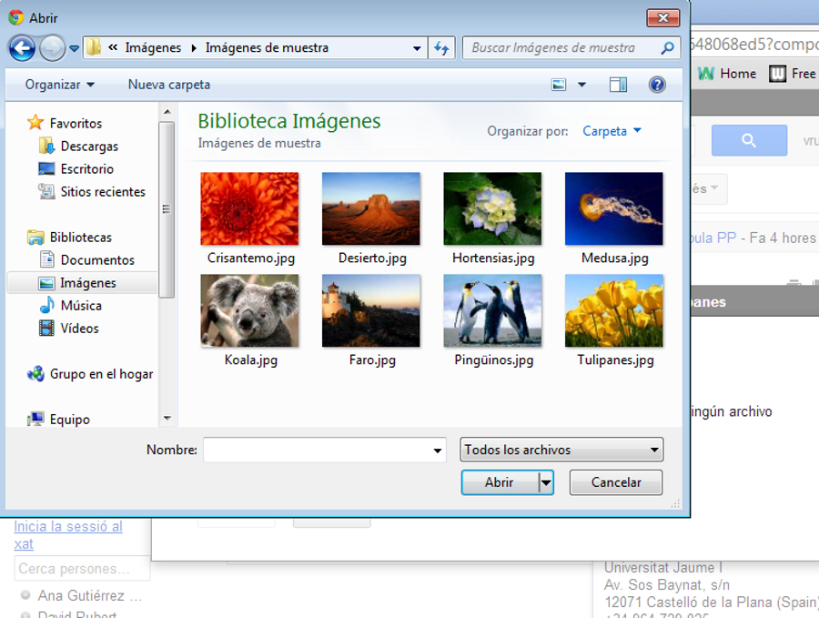

Iniciación a la informática e Internet
Carpetas
Apreta la tecla → para avanzar.


Es la pantalla principal del correo, donde veremos todos aquellos mensajes que nos acaban de enviar, ordenados por fecha de recepción. Veamos qué acciones podemos realizar sobre los mensajes.
Veamos cómo acceder a los mensajes de una carpeta, crear una carpeta nueva, o mover correos a una carpeta.


Cambia de foto con las teclas: ↑ y ↓
Algunos correos tienen todos la misma temática (se generan en base a respuestas de un mensaje inicial), por lo que no interesa que se muestren de forma dispersa.
Cambia de foto con las teclas: ↑ y ↓
¿Sabíais decirme a quién le llegaría mi correo si lo enviara a estas direcciones?
Nadie nos asegura que un correo llegará al destino. Si escribimos mal la dirección el sistema de correo nos avisará que no ha podido entregar el mensaje.
Cambia de foto con las teclas: ↑ y ↓
Podemos incluir varios destinatarios en nuestro correo, de manera que una copia del mensaje le llegue a múltiples personas.
Si queremos enviar una imagen o un documento por correo, deberemos aprender cómo adjuntar esta información al correo que vamos a enviar.


 


Cambia de foto con las teclas: ↑ y ↓